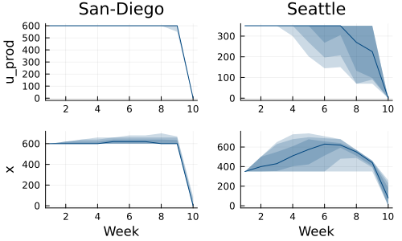

Example: production planning
This tutorial was generated using Literate.jl. Download the source as a .jl file. Download the source as a .ipynb file.
using SDDPimport HiGHSimport PlotsP, M = ["Seattle", "San-Diego"], ["New-York", "Chicago", "Topeka"]Ω = [ Dict("New-York" => 300, "Chicago" => 300, "Topeka" => 300), Dict("New-York" => 350, "Chicago" => 320, "Topeka" => 310), Dict("New-York" => 320, "Chicago" => 390, "Topeka" => 350), Dict("New-York" => 250, "Chicago" => 220, "Topeka" => 330), Dict("New-York" => 290, "Chicago" => 200, "Topeka" => 290),]c_capacity = Dict("Seattle" => 350, "San-Diego" => 600)c_ship = Containers.DenseAxisArray([2.6 1.7 1.8; 2.5 1.8 1.4], P, M)model = SDDP.LinearPolicyGraph(; stages = 10, sense = :Min, optimizer = HiGHS.Optimizer, lower_bound = 0.0,) do sp, t # State variable: inventory levels @variable(sp, x[p in P] >= 0, SDDP.State, initial_value = 0) # Control variable: quantity to produce at each plant @variable(sp, 0 <= u_prod[p in P] <= c_capacity[p]) # Control variable: quantity to ship from plant p to market m @variable(sp, u_ship[p in P, m in M] >= 0) # Control variable: unmet demand @variable(sp, u_unmet[m in M] >= 0) # Random variable: demand in each market @variable(sp, w[m in M] == 0) if t > 1 # In the first-stage there is no uncertainty SDDP.parameterize(sp, Ω) do ω for m in M fix(w[m], ω[m]) end return end end # Constraint: can ship only from existing inventory @constraint(sp, [p in P], sum(u_ship[p, :]) <= x[p].in) # Constraint: balance inventory at each plant @constraint( sp, [p in P], x[p].out == x[p].in + u_prod[p] - sum(u_ship[p, :]), ) # Constraint: balance demand in each market @constraint(sp, [m in M], sum(u_ship[:, m]) == w[m] - u_unmet[m]) @stageobjective( sp, # Cost of production and holding inventory sum(1.0 * u_prod[p] + 0.01 * x[p].out for p in P) + # Cost of unmet demand sum(10 * u_unmet[m] for m in M) + # Cost of shipping sum(c_ship[p, m] * u_ship[p, m] for p in P, m in M), )endA policy graph with 10 nodes.
Node indices: 1, ..., 10
SDDP.train(model; risk_measure = SDDP.Expectation())-------------------------------------------------------------------
SDDP.jl (c) Oscar Dowson and contributors, 2017-26
-------------------------------------------------------------------
problem
nodes : 10
state variables : 2
scenarios : 1.95312e+06
existing cuts : false
options
solver : serial mode
risk measure : SDDP.Expectation()
sampling scheme : SDDP.InSampleMonteCarlo
subproblem structure
VariableRef : [19, 19]
AffExpr in MOI.EqualTo{Float64} : [5, 5]
AffExpr in MOI.LessThan{Float64} : [2, 2]
VariableRef in MOI.EqualTo{Float64} : [3, 3]
VariableRef in MOI.GreaterThan{Float64} : [14, 14]
VariableRef in MOI.LessThan{Float64} : [2, 3]
numerical stability report
matrix range [1e+00, 1e+00]
objective range [1e-02, 1e+01]
bounds range [4e+02, 6e+02]
rhs range [0e+00, 0e+00]
-------------------------------------------------------------------
iteration simulation bound time (s) solves pid
-------------------------------------------------------------------
1 7.880000e+04 1.741050e+04 1.074951e-01 56 1
93 2.340120e+04 2.400929e+04 1.228682e+00 10208 1
209 2.573460e+04 2.400981e+04 2.231591e+00 17704 1
292 2.728810e+04 2.400985e+04 3.079912e+00 22352 1
-------------------------------------------------------------------
status : simulation_stopping
total time (s) : 3.079912e+00
total solves : 22352
best bound : 2.400985e+04
numeric issues : 0
-------------------------------------------------------------------simulations = SDDP.simulate(model, 50, [:x, :u_prod]);Plots.plot( SDDP.publication_plot( simulations; title = "San-Diego", ylabel = "u_prod", ) do data return data[:u_prod]["San-Diego"] end, SDDP.publication_plot(simulations; title = "Seattle") do data return data[:u_prod]["Seattle"] end, SDDP.publication_plot(simulations; ylabel = "x", xlabel = "Week") do data return data[:x]["San-Diego"].out end, SDDP.publication_plot(simulations; xlabel = "Week") do data return data[:x]["Seattle"].out end,)